비서-3급 (2013-11-10 기출문제)
1과목: 비서실무
1. 다음 중 비서가 경조사 업무를 처리할 때 주의해야 할 점으로 틀린 것은?
- 비서는 평상시에 신문의 인물 동정란 이나 경조 기사, 각종 소식지의 회원 소식을 자세히 살핀다.
- 장례식에 대리로 참석할 경우 상사의 이름이 적힌 흰 봉투에 넣어 부의금을 전달하며 방명록에는 대리참석자명을 기재한다.
- 병문안을 갈 경우 먼저 전화로 면회시간을 확인하고 혹시 병원에 반입이 안되는 물품이 있는지도 확인해서 위문의 물품을 준비한다.
- 상사의 유관인사 중에 취임 또는 승진을 한 경우에는 상사께 축하 방법을 의논해서 축전을 보내라고 하시는 경우 국번 없이 115로 신청한다.
(정답률: 63%)

2. 내방객을 안내하는 방법으로 가장 적절하지 않은 것은?
- 여자 비서인 경우 계단을 오를 때는 손님의 뒤에 서서, 내려갈 때는 손님의 앞에 서서 안내한다.
- 승무원이 없는 엘리베이터의 경우 비서가 먼저 타서 문이 닫히지 않도록 열림 버튼을 누르고 있는다.
- 접견실의 문이 안으로 열릴 경우 문을 활짝 열어 방문객이 먼저 안으로 들어간 후 뒤에 따라 들어가도록 한다.
- 접견실로 안내할 경우 “이쪽입니다.”하고 노크를 한후에 문을 연다.
(정답률: 73%)
3. 상사의 일정을 관리하기 위한 일정표의 사용방법으로 가장 적절치 않은 것은?
- 변동가능성을 염두에 두고 수정이 용이한 컴퓨터의 일정표 기능을 사용하는 것이 편리하다.
- 상사의 일정표는 조직의 모든 부서가 공유하도록 한다.
- 일정표는 그 쓰임새에 따라 일일, 주간, 월간 일정표 등으로 활용할 수 있다.
- 일정표의 종류에 따라 시간뿐 아니라 필요한 정보도 함께 기입해 사용하면 편리하다.
(정답률: 91%)
4. 가나상사 김사장이 손비서를 호출하여 다음과 같은 업무지시를 내릴 때 비서의 업무대처 요령으로 가장 부적절한 것은?
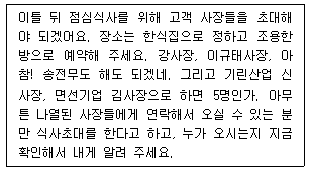
- 호출을 받자마자 메모지와 펜을 소지하여 상사 집무실에 들어갔다.
- 상사가 호명한 '강사장'님을 '대망그룹 강사장'으로 기록했다.
- 상사가 호명한 참석자명을 기록하고 지시받은 후 내용을 복창하며 상사와 확인했다.
- 내용 기록 후 상사가 방문했던 한식집을 기억하여 그 식당으로 예약해도 괜찮을지를 상사에게 질의하였다.
(정답률: 78%)
5. 부의금 봉투 겉면에 조의를 표하는 글귀로 적절치 않은 것은?
- 賻儀
- 謹弔
- 弔意
- 惜別
(정답률: 69%)
6. 장유진 비서가 업무논의 차 마케팅부서의 김과장과 전화통화중이었다. 그때 다른 번호로 전화가 온 경우 장비서의 전화업무처리방법에 대해 가장 적절치 않은 것은?
- 마케팅부서의 김과장에게 양해를 구하고 전화를 대기시킨 후 나중 온 전화를 받는다.
- 일단 김과장과의 전화를 끊고 난 후 나중 온 전화를 받는다.
- 나중에 온 전화를 받은 후 먼저 전화를 건 사람과 통화가 끝날 때까지 기다려 줄 수 있는지 양해를 구하고 전화를 대기시킨다.
- 시간이 소요될 것으로 예상되면 나중에 온 전화의 상대에게 전화를 다시 걸어드리는 게 좋을지, 아니면 기다리겠는지에 대한 의견을 구한다.
(정답률: 77%)
7. 비서는 상사의 개인 정보를 정확하게 알고 관리해야 한다. 이를 관리하는 태도로서 가장 적절하지 않은 것은?
- 상사의 윗사람, 동료, 부하 직원들의 생일, 기념일 등을 상사가 챙길 수 있도록 보좌한다.
- 상사의 고향, 학력, 생년월일, 가족사항, 좋아하는 음식등 가능한 많은 정보를 수집한다.
- 상사가 사적으로 관련되어 있는 모임이나 단체는 사생활이므로 관여하지 않는 것이 좋다.
- 상사의 인맥을 데이터베이스 프로그램 등으로 정리해두고 노출되지 않도록 유의한다.
(정답률: 62%)
8. 상사의 인적 네트워크를 관리하는 비서의 업무태도로서 가장 올바른 것은?
- 상사의 인적 네트워크 명단은 사내 비서들끼리 공유하여 대상자의 중복관리가 되지 않도록 한다.
- 인적 네트워크 관리를 위한 정보수집에서 상대방의 생년월일, 가족사항, 좋아하는 음식 종류 등은 사적 정보이므로 정보 수집시 배제하도록 한다.
- 인적 네트워크 관리대상과 관련된 주요 사항들을 상사의 행사 달력에 표기하여 상사와 대처방안을 확인하도록 한다.
- 상사의 인적 네트워크 관리 명단에는 국ㆍ 내외 거래처명단에 초점을 맞춰 관리를 하며 사내 임직원 관리는 인사부서를 통하여 관리하도록 한다.
(정답률: 68%)
9. 조민지 비서가 상사의 해외출장을 계획하는 방법으로 가장 적절하지 않은 것은?
- 회사의 출장 여비 규정에 따라 항공편과 숙박시설을 예약하도록 한다.
- 회사와 계약되어 있는 호텔을 이용할 경우 기업할인요금을 적용받을 수 있다.
- 상사가 선호하는 항공사와 숙박시설 등 취향을 고려하여 계획을 수립한다.
- 해외 출장의 경우 상사의 여권 유효기간이 1년 이상 남아 있어야 출국이 가능하다.
(정답률: 75%)
10. 김비서는 회사의 신제품 설명회 준비를 위해 상사가 주도하는 사내 회의일정을 계획 중이다. 비서가 확인해야 할 항목 및 일처리 방안에 대한 설명으로 가장 부적절한 것은?
- 회의 날짜와 시간, 그리고 사정에 따라서 날짜와 시간의 변경이 가능한 것인가를 확인한다.
- 회의의 성격에 따라 적합한 장소를 선택하도록 회의의 종류를 미리 파악한다.
- 회의 참석자가 바쁠 경우 대리참석이 가능한지를 미리 확인한다.
- 회의순서 배열 시 복잡한 내용으로부터 간단한 내용으로 배열하여 집중 토의가 가능하도록 한다.
(정답률: 77%)
11. 비서의 직업 윤리로서 적절하지 않은 것은?
- 비서는 무엇보다 상사에 관한 기밀업무를 잘 처리하여 상사와의 신뢰관계를 쌓아야 한다.
- 비서는 상사를 보좌하는 역할이므로 상사의 이익이 회사의 이익보다 앞서야 한다.
- 회사의 기구나 비품은 상사의 사적인 목적으로 사용할 수 없다.
- 비서에게 있어 상사에 대한 충성심은 절대적으로 필요한 요소이다.
(정답률: 87%)
12. 비밀엄수를 유지하는 비서의 태도로서 가장 적절한 것은?
- 비서 책상 위의 컴퓨터는 가급적 화면이 통로에서 보이지 않도록 위치해 놓는다.
- 전사적으로 공표되지 않은 사안이라도 신속한 업무진행을 위하여 소수의 관련자에게 전달해 놓는다.
- 상사일정에 대한 문의전화에 친절하게 응대하기 위하여 요청받은 행선지 정보를 명확하게 전달하도록 한다.
- 업무 중 잠시 자리를 비울 때마다 비서 책상 위의 자료를 매번 정리 정돈할 필요는 없다.
(정답률: 75%)
13. 두명의 상사를 모시면서 과중한 업무와 인간관계에 의한 스트레스를 받는 비서가 이를 조정하고 관리하는 방법으로 가장 부적절한 것은?
- 과다한 업무로 인한 스트레스를 받을 때 우선 감정을 억제하고 우선순위에 따른 업무리스트를 작성해서 차근차근 처리한다.
- 두명의 상사를 보좌할 때 일의 우선순위를 상사들과 의논하여 정한다.
- 충분한 수면과 규칙적인 운동, 일과 여가의 균형을 맞추는 생활을 함으로써 몸과 마음의 건강을 지킨다.
- 사내ㆍ외에 멘토를 정하여 인간관계에서 오는 고충에 대해 털어 놓고 조언을 받는다.
(정답률: 54%)
14. 상사가 부재중일 때 비서의 업무처리에 대한 설명으로 가장 옳은 것은?
- 이메일의 확인을 수시로 하여 실시간으로 상사에게 알린다.
- 상사에게 온 개인적인 우편물은 긴급한 경우의 처리를 위해 모두 개봉하여 확인한다.
- 모든 업무는 상사와의 의사소통 없이도 비서의 재량 하에 운영한다.
- 상사와 의논하여 출장 중에도 상사와 의사소통할 수 있는 채널과 시간을 확보하도록 한다.
(정답률: 84%)
15. 각 상황별 비서의 대인관계 태도로서 가장 적절한 것은?
- 조기 퇴근의 경우 마무리가 안 된 상사 지시업무는 다음 날 출근하여 마무리할 수 있도록 정리하고 퇴근하도록 한다.
- 미리 조퇴를 요청한 경우 조기 퇴근하면서 동료들에게 굳이 양해와 미안함을 표시할 필요는 없다.
- 장기간 결근이나 휴가 중에는 가끔 사무실에 연락하여 업무상황을 살피도록 한다.
- 외출하여 업무를 하던 중 퇴근시간이 지났을 경우에는 굳이 상사나 동료에게 연락을 취하여 퇴근보고를 할 필요는 없다.
(정답률: 68%)
16. 새로 입사한 이지현 비서는 선배들로부터 비서 업무를 효율적으로 수행함에 있어 인맥형성이 중요하다는 조언을 받았다. 다음 중 이비서가 네트워크를 형성하기 위해 노력하는 방법으로 가장 적절하지 않은 것은?
- 항공편을 예약할 시 여행사와 통화하며 자신을 소개하고 잘 부탁한다는 인사말과 함께 상대방의 이름도 알아둔다.
- 비서협회에 가입하여 상사의 업무보좌에 필요한 노하우를 익혔다.
- 회사 내 스키 동호회 모임에 가입하여 적극적으로 참여함으로써 타 부서 직원들과의 관계를 돈독히 한다.
- 동료직원들과의 원만한 관계 형성과 사내 비공식적인 정보 파악을 위해 회사 내 노동조합에 가입한다.
(정답률: 77%)
17. 다음 중 방문객을 대하는 비서의 업무처리 방식으로 가장적절한 것은?
- 방문객이 급하다고 요청하여 회의 중인 상사에게 구두로 알리고 지시를 받았다.
- 손님이 자신의 신분을 밝히지 않을 경우 굳이 질문하여 손님을 불쾌하게 만들 필요는 없다.
- 상사 부재시 선약되지 않은 손님이 방문한 경우에는 손님 앞에서 바로 상사에게 연락하여 지시를 받도록 한다.
- 약속 시간보다 일찍 도착한 손님은 우선 대기실로 모시고 상사의 앞 일정이 종료되는 대로 말씀드리겠다고 양해를 구한다.
(정답률: 77%)
18. 업무 보고를 하는 비서의 태도로서 가장 부적절한 것은?
- 보고 시점은 업무의 소요시간과 상관없이 업무가 모두 종료된 시점에서 진행하는 것이 바람직하다.
- 지시받은 업무나 이미 승인된 업무 계획이 수정되었을 때에는 상사에게 보고한다.
- 상사의 지시와 관련된 정보나 자료가 입수되었을 때 보고한다.
- 보고시에는 상황과 내용에 따라 구두 혹은 문서보고 중효율적 방식을 선택할 수 있어야 한다.
(정답률: 84%)
19. 각 상황별 비서의 응대화법으로 가장 적절한 것은?(오류 신고가 접수된 문제입니다. 반드시 정답과 해설을 확인하시기 바랍니다.)
- 신분을 밝히지 않는 고객에게 “죄송합니다만, 성함을 말씀해 주시겠습니까?”라고 여쭈었다.
- 상사보다 먼저 퇴근하는 경우 “수고하세요.”라고 인사 하였다.
- 사전 약속을 하지 않은 고객에 대하여 상사가 면담을 거절할 경우에는 “상사가 만나실 수 없다고 하십니다.”라고 단호히 말하였다.
- 조문을 위해 상가에 들어가 상제에게 “고생이 많으십니다.”라고 말하였다.
(정답률: 49%)
20. 상사의 집무실내 교체해야 할 사무용품을 구매하기 위한 절차에 대한 설명으로 가장 적절치 않은 것은?
- 필요한 물품은 세밀하게 조사하고 신청서는 회사에 따라 월별 또는 주 단위로 작성한다.
- 상사의 특별 주문사항도 모아두었다가 한꺼번에 주문한다.
- 주문한 물건이 왔을 때 구매 신청서와 일치하는지 검토하고 제 자리에 비치한다.
- 경제적인 가격과 품질의 상품을 구매하기 위해 우수한 거래처를 선정하도록 한다.
(정답률: 78%)
2과목: 사무영어
21. 다음 대화 내용상 빈칸에 들어가기에 가장 적합한 표현을 고르시오.
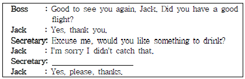
- Anything else?
- How would you like your coffee?
- How do you like it?
- Would you like some coffee?
(정답률: 68%)
22. 아래 대화의 질문과 답이 바르게 짝지어지지 않은 것은?
- Q: What does his company make?
A: It makes toothpaste and soap. - Q: Where's the head office of your company?
A: It is in New York. - Q: How long have you worked there?
A: About 30 minutes by subway. - Q: How many employees does your company have?
A: It has 37,000 employees.
(정답률: 84%)
23. 아래 대화의 빈칸에 들어갈 문장으로 가장 적절하지 않은 것은?
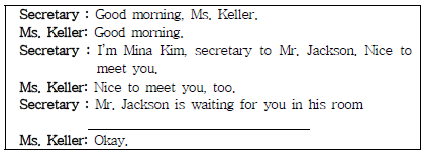
- Please come again another time.
- Let me show you the way in.
- Follow me, please.
- This way, please.
(정답률: 60%)
24. 위 대화의 내용으로 가장 알맞은 답을 보기에서 고르시오.(24번 공통지문 문제)
- Mr. Woods는 약속 없이 Mr. Cliff의 사무실을 방문했다.
- Mr. Woods는 Mr. Cliff를 만나기 위해 사무실을 방문했다.
- 비서는 상사의 3시 약속을 전혀 알지 못했다.
- Mr. Cliff와 Mr. Woods는 사전에 만나기로 약속되어 있었다.
(정답률: 77%)
25. 다음 문서에 대한 설명으로 맞지 않는 것을 보기에서 고르시오.
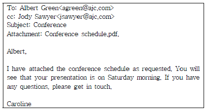
- 이 문서에는 첨부물이 있다.
- 이 문서의 수신자는 총 2명이다.
- Albert Green의 요청에 대한 회신의 내용이다.
- 토요일 아침 presentation의 발표자는 Jody Sawyer이다.
(정답률: 81%)
26. 다음의 문서서식으로 가장 적절한 것을 고르시오.
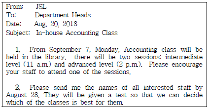
- memorandum
- invitation
- itinerary
- minutes
(정답률: 75%)
27. 다음 편지의 inside address가 맞게 쓰인 것은?
- Ms. Jane Smith
New York, NY10114
8437 West Drive
Manager, Sales Departmet
Modern Productions - Ms. Jane Smith
Manager, Sales Departmet
Modern Productions
8437 West Drive
New York, NY10114 - Modern Productions
New York, NY10114
8437 West Drive
Ms. Jane Smith
Manager, Sales Departmet - Modern Productions
Manager, Sales Departmet
Ms. Jane Smith
8437 West Drive
New York, NY10114
(정답률: 73%)
28. 다음의 영문 부서명과 한글 뜻이 연결된 것 중 가장 적절하지 않은 것을 보기에서 고르시오.
- Customer Service - 고객관리부
- General Affairs Dept. - 총무부
- Headquarters - 지사
- Personnel Dept. - 인사부
(정답률: 77%)
29. 다음 문장 중에서 문법적으로 바르지 못한 것은?
- Please send us your catalog.
- How about have a lunch tomorrow?
- I would like to know more about your company.
- I am interested in computers.
(정답률: 67%)
30. 다음 편지를 마무리하는 순서로 가장 적절한 것은?
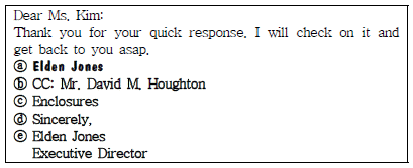
- ⓓ → ⓔ → ⓐ → ⓑ → ⓒ
- ⓓ → ⓐ → ⓔ → ⓑ → ⓒ
- ⓓ → ⓐ → ⓔ → ⓒ → ⓑ
- ⓓ → ⓔ → ⓐ → ⓒ → ⓑ
(정답률: 60%)
31. 다음 대화를 읽고, 질문에 대한 대답이 적절하지 않은 것을 고르시오.
- A: May I please see your customs declaration form?
B: Sure, here it is. - A: How long will you be staying in this country?
B: We'll be here for 15 days. - A: Have you flown with us before?
B: No, I've never been there. - A: Is your passport valid?
B: It's valid until January 2012.
(정답률: 73%)
32. 다음 봉투에 적힌 내용으로 미루어 옳은 것을 보기에서 고르시오.
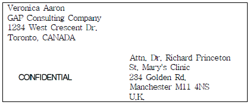
- 캐나다에서 우크라이나로 가는 국제우편이다.
- Veronica의 비서만이 이 편지를 발송할 수 있다.
- 이 편지는 Richard Princeton이 수취인으로 되어있다.
- St. Mary's Clinic은 Toronto에 있다.
(정답률: 83%)
33. 다음 대화를 읽고 사실과 다른 것을 고르시오.
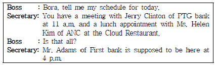
- Boss는 오늘 세 사람을 만나기로 되어 있다.
- Boss는 Mr. Adams의 사무실에 4시까지 가야 한다.
- Boss는 Jerry Clinton과 오전에 회의를 가질 것이다.
- Boss는 Cloud 식당에서 점심식사를 할 것이다.
(정답률: 76%)
34. 아래 대화를 읽고 상황을 설명한 말로 적절한 것은?
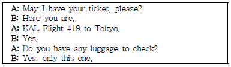
- 호텔 수속하기
- 비행기 표 예약하기
- 출국 심사하기
- 비행기 탑승 수속하기
(정답률: 82%)
35. 다음 주소의 밑줄 친 부분과 성격이 다른 것을 보기에서 고르시오.
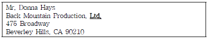
- Co.
- Inc.
- Corp.
- Ext.
(정답률: 73%)
36. 위의 대화에서 밑줄 친 (b) 대신 들어갈 수 있는 표현으로 가장 적절한 것을 보기에서 고르시오.(37번 공통지문 문제)
- Mr. Brown's line is disconnected.
- Mr. Brown's line is crossed.
- Mr. Brown's line is busy.
- Mr. Brown's line is available.
(정답률: 66%)
37. 다음 전화음성 메시지를 읽고 물음에 답하시오. 위 메세지에 관한 다음의 보기 내용 중 잘못된 것은?
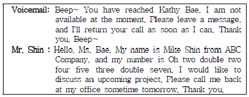
- Mike Shin is calling to Kathy.
- His phone number is 02-224-5377.
- Ms. Bae can pick up the phone right now.
- He asks her to call him back at his office.
(정답률: 77%)
38. 다음 대화의 흐름 상 빈 칸에 가장 적합한 것을 보기에서 고르시오.
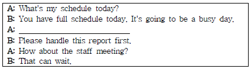
- Anything else?
- When is the stockholder's meeting scheduled?
- I've got to check my schedule.
- What should I do first?
(정답률: 83%)
3과목: 사무정보관리
39. 다음 우편물 발송을 위한 존칭 중 가장 적절하지 않은 것은?
- 공공연금공단 이사장 귀하
- 김철수 님
- 대한주식회사 사장님 귀하
- 주주 각위
(정답률: 72%)
40. 다음 중 띄어쓰기가 바른 것끼리 짝지어진 것은?
- 팀장 겸 부문장 - 부장, 과장 등
- 팀장겸 부문장 - 부장, 과장 등
- 팀장 및 사원 - 부장, 과장등
- 팀장및 사원 - 부장, 과장등
(정답률: 92%)
41. 전자 문서의 장점에 대한 설명으로 가장 거리가 먼 것은?
- 문서의 접수, 결재, 보관, 검색 등에 소요되는 시간이 절약된다.
- 컴퓨터 파일로 결재되고 시행되어 문서 처리에 소요되는 비용이 절감된다.
- 종이문서보다 체계적인 분류와 보관이 가능하다.
- 새로운 정보 습득의 용이성으로 인한 정보량 증가로 문서 작성 시간이 늘어난다.
(정답률: 90%)
42. 다음 기사의 내용 중 가장 거리가 먼 것은?
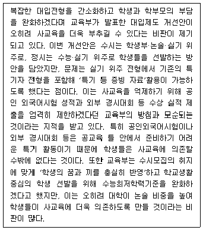
- 대입제도 개선안은 오히려 사교육을 부추길 수 있다는 비판이 제기되고 있다.
- 실기 위주로 선발하는 방안을 담았지만, 기존의 특기자전형을 포함해 사교육에 의존할 수밖에 없다.
- 수능최저학력기준을 더욱 완화한다면 이는 대입전형에 있어 학생과 학부모 부담을 더욱 높이고 있다.
- 특기 등 증빙 자료 활용이 가능한 방안은 기존의 교육부 방침과 일치한다.
(정답률: 79%)
43. 다음은 발신 문서의 처리방법에 대한 설명이다. 바르게 설명된 것을 모두 고르시오.
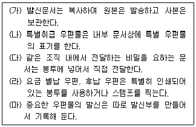
- (가), (나), (다), (마)
- (가), (다), (라), (마)
- (나), (라), (마)
- (다), (라), (마)
(정답률: 58%)
44. 사무비품 관리를 위한 비서의 행동으로 가장 옳지 않은 것은?
- 박비서는 매일 아침 복사기에 용지를 가득 채워 놓는다.
- 김비서는 매일 아침 날짜 스탬프를 제 날짜로 바꿔 놓는다.
- 이비서는 매일 아침 상사 책상 위의 볼펜과 사인펜을 점검한 후 교체한다.
- 황비서는 매일 아침 스탬프의 잉크를 교체한다.
(정답률: 78%)
45. 정보 출력 장치의 일종으로 A0크기 이상까지도 출력이 가능하며, 고해상도의 출력이 가능해서 주로 대형 인쇄에 사용하는 장치의 이름은 무엇인가?
- 레이저 프린터
- 플로터
- 3D 프린터
- 스마트 프린터
(정답률: 69%)
46. 사무환경 관리를 위한 김비서의 행동으로 가장 적절하지 않은 것은?
- 키보드와 마우스, 전화기를 살균세정제로 닦았다.
- 모니터는 화면의 불안정으로 인한 떨림이 없는 모니터를 사용한다.
- 비서실은 공기가 탁하므로 식물을 두지 않았다.
- 상사집무실 집기는 상사의 품격과 격조를 고려하여 몇 가지 안을 제안하였다.
(정답률: 88%)
47. 거래처에서 보낸다고 하는 이메일이 도착하지 않는다. 거래처 김대리는 분명 발송을 여러 차례 하였다고 한다. 아래 지문 중에 고려할 수 없는 상황은?
- 자신의 메일에 저장용량이 부족하여 수신하지 못하였다.
- 메일 주소에 오류가 있어서 수신하지 못하였다.
- 스팸메일로 처리되어 수신하지 못하였다.
- 문서처리과에서 전달하지 않아 수신하지 못하였다.
(정답률: 88%)
48. 다음 달에 개최될 회사 준공식 관련 초대장을 100명에게 보내고자 하는 경우 사용하기에 가장 적합한 우편제도는 무엇인가?
- 요금별납
- 특급우편
- 배달증명
- 내용증명
(정답률: 80%)
49. 소음관리를 위한 행동 중 가장 적절하지 않은 것은?
- 강비서는 골프장 예약을 위해 스피커폰을 이용하였다.
- 민비서는 소리가 많이 나는 파쇄기 밑에 고무판을 깔았다.
- 차비서는 천장, 벽, 바닥은 소음을 흡수하는 소재를 선택했다.
- 임비서는 서랍이 있는 책상위에 프린터를 올려놓지 않았다.
(정답률: 87%)
50. 대한전자에 근무하는 김비서는 상사의 미국 출장을 위해 100달러를 환전하려고 한다. 준비해야 하는 원화의 금액은 얼마인가?
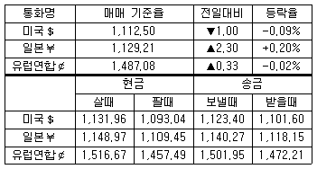
- 111,250원
- 113,196원
- 112,340원
- 109,304원
(정답률: 84%)
51. 다음 중 컴퓨터 정보보안을 위한 비서의 행동으로 가장 옳지 않은 것은?
- 김비서는 최신 버전의 백신 프로그램을 사용하여 주기적으로 바이러스 검사를 수행한다.
- 박비서는 회사 공인인증서를 분실에 대비하여 하드 디스크, 노트북 컴퓨터, 이동식 저장장치(USB) 등에 저장해 두었다.
- 장비서는 회사 메일주소와 개인 메일주소를 따로 구분하여 사용하고 있으며, 웹사이트 가입시 가능하면 회사 메일주소를 이용하지 않는다.
- 문비서는 컴퓨터를 켜거나 윈도우에 로그인할 때 비밀번호를 설정하였다.
(정답률: 73%)
52. 신문 스크랩에 관한 설명 중 가장 적절하지 않은 것은?
- 상사와 관련 있는 경조사, 인사 동정란을 살펴본다.
- 신문스크랩은 주기를 정해 정기적으로 폐기하여 공간을 낭비하지 않는다.
- 수집한 자료에 관련된 게재일, 출처, 설명을 기록한다.
- 신문 스크랩은 그날 신문에서 바로 오려서 정보를 빠르게 수집한다.
(정답률: 71%)
53. 기업 전체를 경영자원의 효과적 이용이라는 관점에서 통합적으로 관리하고 경영의 효율화를 기하기 위한 수단으로, 통합적인 컴퓨터 데이터베이스를 구축해 회사의 자금, 회계, 구매, 생산, 판매 등 모든 업무의 흐름을 효율적으로 자동 조절해주는 전산 시스템을 무엇이라 하나?
- ERP
- EC
- MIS
- EDMS
(정답률: 83%)
54. 통신이나 인터넷을 통해 불특정 다수에게 원하지도, 요청하지도 않은 메일을 대량으로 보내는 광고성 메일을 뜻하는 용어를 모두 고르시오.
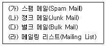
- (가), (나)
- (가), (다)
- (가), (나), (다)
- (가), (나), (다), (라)
(정답률: 61%)
55. IT회사의 비서로 일하고 있는 강비서는 상사에게 IT업계의 동향을 파악하기 위한 전문 정보를 제공하고자 한다. 관련된 모든 최신 뉴스, 신문이나 잡지, 전문정보, 학술정보 등 자료를 모두 발췌 ㆍ 제공하기란 바쁜 강비서에게 무리인 듯하다. 강비서가 이용할 수 있는 가장 적절한 서비스는?
- 뉴스 스크랩
- 블로그 서비스
- 클리핑 서비스
- 푸쉬 서비스
(정답률: 72%)
56. 무선 광대역 인터넷 기술을 의미하는 것으로 휴대용 인터넷 단말장치를 이용하여 이동하면서 고속으로 무선 인터넷 접속이 가능하게 하는 서비스를 무엇이라고 하는가?
- 와이브로
- 유비쿼터스
- 그리드 컴퓨팅
- 텔레매틱스
(정답률: 60%)
57. 다음 그래프에 관한 설명 중 가장 적절하지 못한 것은?
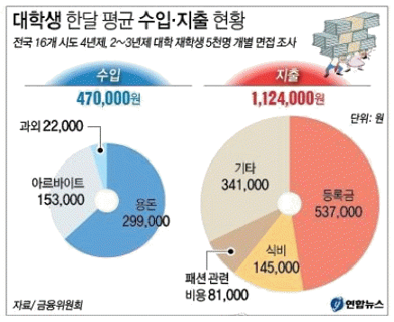
- 대학생 지출 중 등록금의 비중은 수입 중 용돈의 비중보다 낮다.
- 대학생 수입 중 용돈이 가장 큰 비중을 차지한다.
- 대학생 지출에서 등록금을 제외한다면 수입이 지출보다 많다.
- 대학생 지출에서 가장 비중이 큰 항목은 등록금이다.
(정답률: 79%)
58. 다음은 무엇에 대한 설명인가?
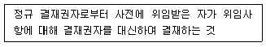
- 전결
- 대결
- 후결
- 위결
(정답률: 74%)
비서는 경조사 업무를 처리할 때 신중하고 세심하게 처리해야 한다. 경조사 업무에는 장례식 참석, 병문안, 축하 방문 등이 포함된다. 이때 주의해야 할 점은 각각 다르다. 예를 들어, 병문안을 갈 경우 먼저 전화로 면회시간을 확인하고 혹시 병원에 반입이 안되는 물품이 있는지도 확인해서 위문의 물품을 준비해야 한다. 또한, 상사의 유관인사 중에 취임 또는 승진을 한 경우에는 상사께 축하 방법을 의논해서 축전을 보내라고 하시는 경우 국번 없이 115로 신청해야 한다.